Fresa
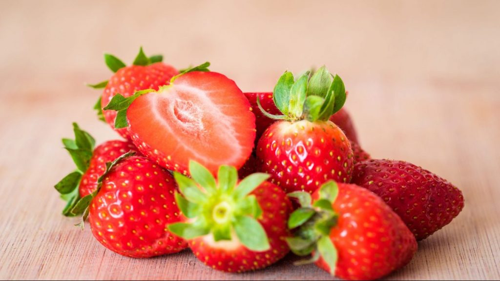Las fresas se cultivan sobre todo por su uso en la gastronomía. La fresa es una fruta del bosque adecuada en diferentes dietas, ya que tiene escasa concentración de glúcidos. Tiene un sabor muy agradable aunque ligeramente agrio. Se consumen solas o mezcladas con azúcar, azúcar y vino, azúcar y nata, zumo de naranja, en helados, mermeladas, zumos, licuados, batidos y también son muy apreciadas en repostería para dulces, pasteles y tartas. Los frutos de color rojo vivo de varias especies dan un toque especial como adorno alimenticio. Con la fresa se hace una bebida alcohólica compuesta de aguardiente denominada licor de fresas. Las fresas tienen un alto contenido de fibra, vitamina C, antioxidantes, potasio, ácido fólico y minerales. Es una de las frutas con un número menor de calorías. El consumo de esta fruta ayuda a mantener la piel hidratada; combate el estreñimiento debido a la fibra, evita enfermedades oculares, debido también a la vitamina C y los pigmentos como la luteína y la zeaxantina; o reduce problemas cardiovasculares. Se debe evitar el consumo a menores de 18 meses, por ser una fruta alergénica. Debido a un alto nivel de ácido oxálico puede estar contraindicada a personas con predisposición a padecer litiasis renal.
Naranja
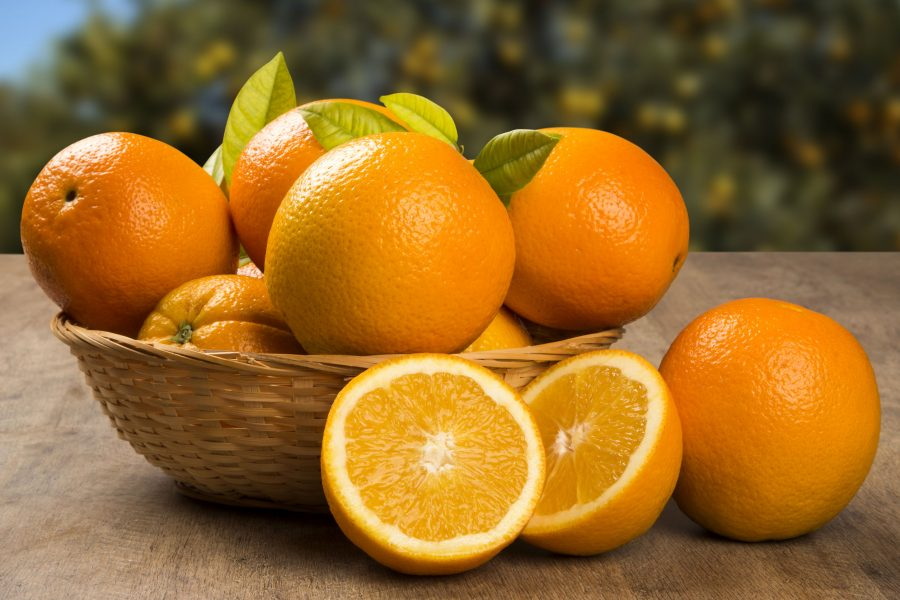La naranja es una fruta cítrica obtenida del naranjo dulce, del naranjo amargo y de naranjos de otras variedades o híbridos, de origen asiático. Es un hesperidio carnoso de cáscara más o menos gruesa y endurecida, y su pulpa está formada típicamente por once gajos u hollejos llenos de jugo, el cual contiene mucha vitamina C, flavonoides y aceites esenciales. Se cultiva como un antiguo árbol ornamental y para obtener fragancias de sus frutos. Es más pequeña y dulce que el pomelo o toronja y más grande, aunque menos perfumada que la mandarina. Como todas las frutas cítricas, la naranja es ácida, con un pH entre 3,1 y 4,1 según la madurez, tamaño y variedad de la pieza. Aunque esto no es, de media, tan fuerte como el limón, sigue siendo un valor fuerte en la escala de pH, tanto como el vinagre. Gracias a su contenido en azúcares simples no destaca tanto el sabor ácido como pueda pasar en el pomelo. El componente que más ha dado que hablar de la naranja es su vitamina C, ya que 100 g de producto contienen hasta el 90 % de las necesidades diarias, sin embargo, también contiene sustancias no-nutritivas entre las que cabe destacar la presencia de fitoquímicos, tales como flavonoides (con efectos antioxidante, antiinflamatorio y antitumoral) y limonoides (anticancerígeno).
 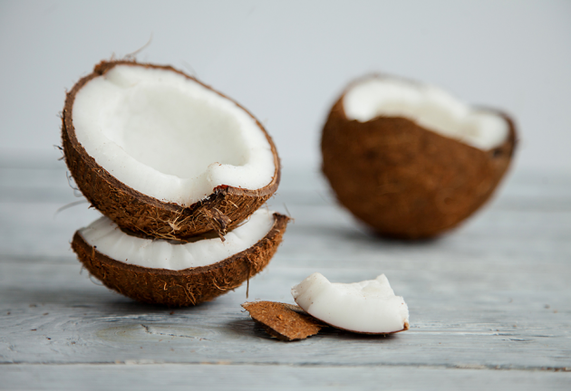
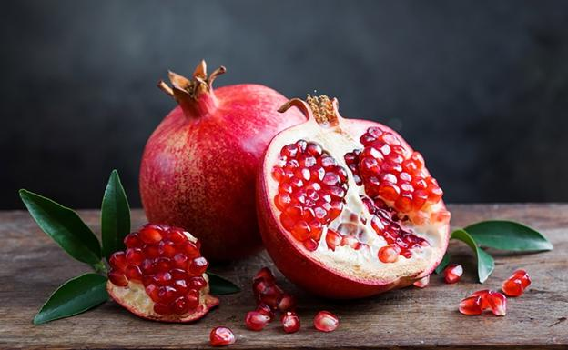
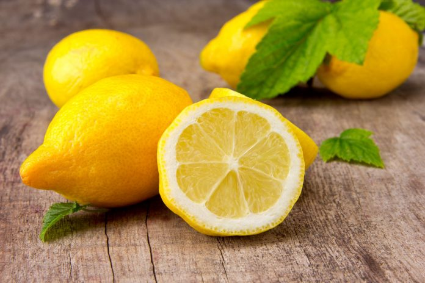
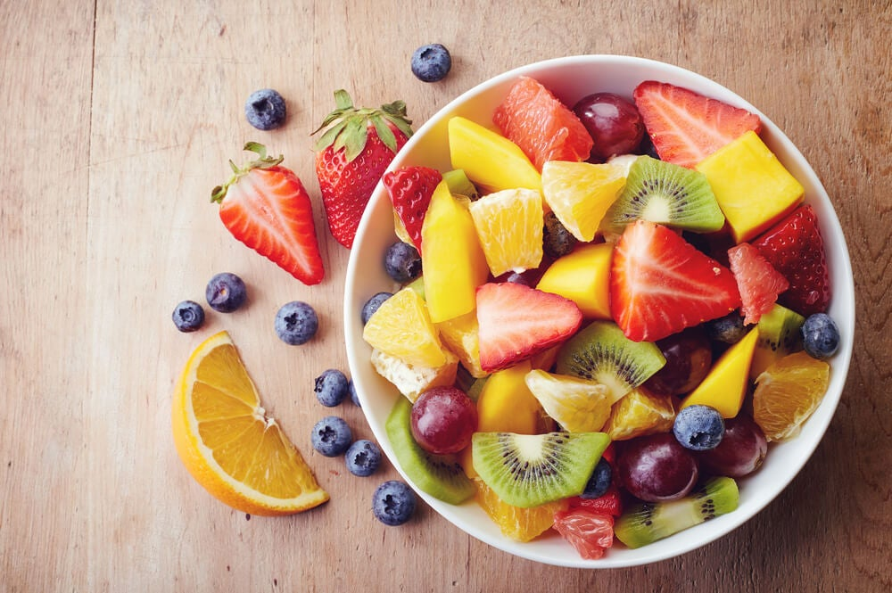
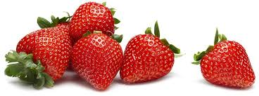
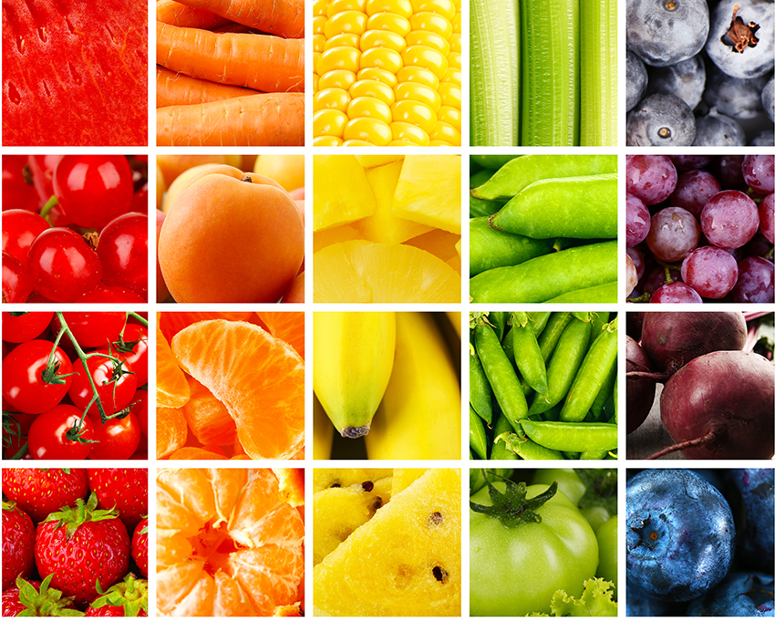
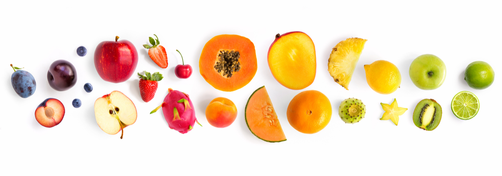
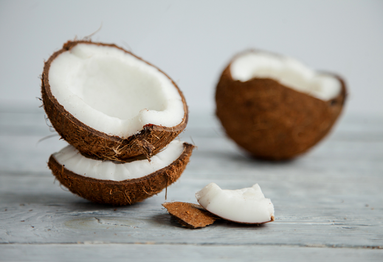
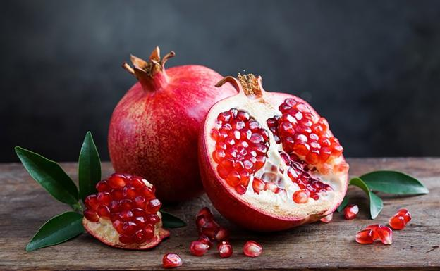
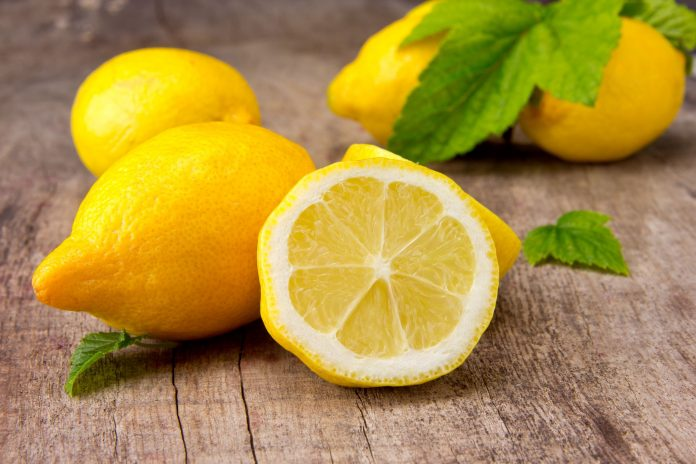
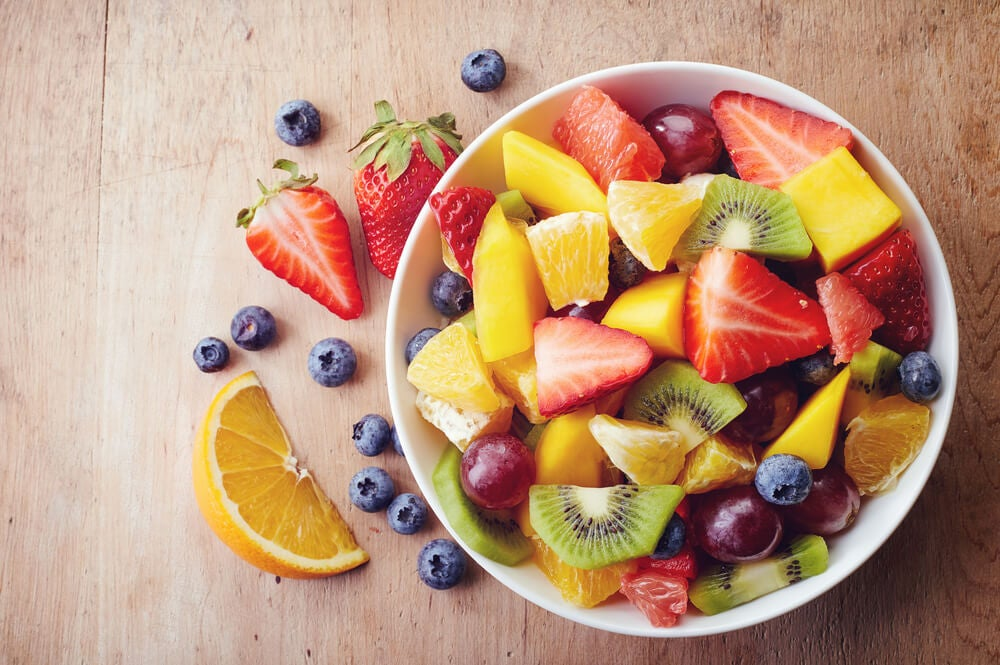
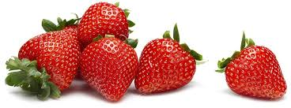
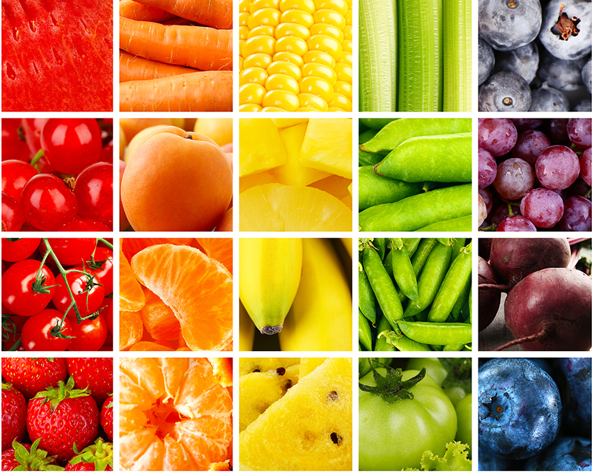
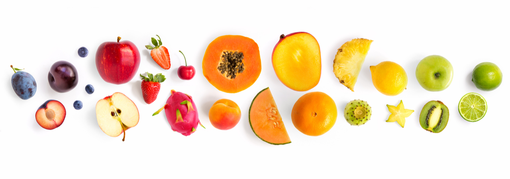